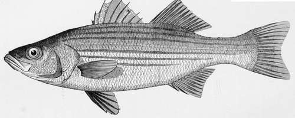

The Striped Bass. Part 2
Description
This section is from the book "American Game Fishes", by W. A. Perry. Also available from Amazon: American Game Fishes: Their Habits, Habitat, and Peculiarities; How, When, and Where to Angle for Them.
The Striped Bass. Part 2
In the fall of the year, crews of hardy surfmen may be seen, on any favorable day, coasting along in their bank skiffs, just beyond the breakers, with one of their number stationed in the bow as a lookout, and as they near the sandspits, where the break of the sea lashes the water into suds, the fish will be seen scudding away, frightened at the approaching craft. I have seen them present a particularly lively appearance in the night-time, darting through the phosphorescent water like bolts of living fire. The seines are short, not comparing with the enormous ones used in North Carolina, and are paid out in the usual manner, from the stern of the boat. I have known five thousand pounds of Bass to be caught in one haul on the coast of New Jersey
As this king of the surf is indigenous to American waters so the implements used in his capture are peculiar to this country Salmon and Trout rods and reels are sometimes imported, but all fine Bass tackle, with the exception of the hook, is the result of American ingenuity, and is made by our own artisans.
The methods of angling for him in the early Puritan days, and the implements used, were somewhat primitive. William Wood published a tract in 1634, entitled "New England's Prospect-A true, lively, and experimental description of that part of America called New England,"-in which the manner of catching these fish by our ancestors is thus set forth: "Of these fishes (the Basse) some be three and some foure feet long, some bigger some lesser. At some tides a man may catch a dozen or twenty of these in three houres; the way to catch them is with hooke and line. The fisherman taking a great Cod-line, to which he fasteneth a piece of Lobster and throwes it into the Sea; the fish biting at it, he pulls her to him and knocks her on the head with a sticke."
A recent English novelist, noted for his powers of minute description, gives the following account of Bass-fishing in the last century. The fish spoken of is not our Striped Bass, but his English patronymic, the Perca Labrax of Linnaeus, Labrax lupus of Cuvier. Old Davy tells the story in "The Maid of Sker:" "Up I roused and rigged my pole for a good bout at the Bass. At the butt of the ash was a bar of square oak, fitted in with a screw-bolt, and woven round this was my line of good hemp, twisted evenly, so that if any fish came who could master me, and pull me off the rocks almost, I could indulge him with some slack by unreeving a fathom of line. At the end of the pole was a strong loop-knot, through which ran the line bearing two large hooks with the eyes of their shanks lashed tightly with cobbler's ends upon whip-cord. The points of the hooks were fetched up with a file and the barbs well blackened, and the whole dressed over with whale-oil. Then upon one hook I fixed a soft crab, and on the other a cuttle-fish."
Can any thing be more quaint than these accounts of fishing in the olden time?
The late Mr. Conroy, an octogenarian whose name was a tower of strength in the fishing-tackle trade for more than half a century, gave me some interesting reminiscences of the early history of Bass-fishing in the vicinity of New York. He said that the reels were single-acting, awkward affairs at best; that the multiplier, the balance-handle, the guides, reel-band, and tip of the rod, and various other minor details in both rod and reel which go to make up their present perfection, are the result of improvements made from time to time, suggested by the experience of anglers, or by the ingenuity of the makers themselves. As to the material of which the rod should be made, there is much diversity of opinion; in fact, there are so many kinds of wood that are excellent for the purpose, that it becomes a matter of caprice or fancy on the part of the individual. Some prefer the jointed rod of ash and lance-wood; others the Calcutta, and others still the Japan bamboo; while a few, who have the means and believe that this royal fish should be hunted in regal style, use a rod consisting of a short butt of ash, to which the reel is attached, while the long, tapering second joint is made of the choicest bamboo splints glued together and bound with parti-colored silks, with guides and tips of agate or cornelian. This is the rod "de luxe"-lovely, costly, delightful to handle, but I fear not over-reliable in wet weather, by reason of the glue used in its construction. Calcutta or Japan bamboo, in their natural state, possess qualities which fit them admirably for heavy sea-fishing; the slender, tapering stems formed of masses of tough, stringy fibers, which spread out sparsely through the pithy inner wood where strength is not required, and crowd so closely as almost to touch each other as they approach the flinty covering-the case-hardening as it were, which envelop the whole-seem to be especially adapted to the purpose.
With such a rod you may cast all day without tiring. It is springy, and strikes a fish sharply and at once, and has an elastic force which will enable you to tire out a seventy-pounder if you have the good fortune to try conclusions with one of that weight. It requires at least as much skill to make a cast with it as it does to cast a Salmon-fly. The bait must go to its destination at once, or the line has to be reeled in and a fresh cast made; there can be no retrieving the shortcomings of the first attempt, as can be done with the Salmon or Trout rod. When the bait is started on its flight through the air, the reel, if a fine one, pays out the line much faster than the weight of the bait can carry it off, and if not checked by the thumb, the line overruns and forms a disagreeable snarl on the barrel of the reel-the great art being to know just how much pressure of the thumb is requisite to have the line render only as fast as the bait will carry it.
The graceful ease with which the old Bass angler makes his cast is misleading to the tyro. His rod is thrown back with about two and one-half feet of line for play; a rather slow movement of the tip, not a sudden jerk, forward, and the bait, describing a graceful curve, drops noiselessly in the water, within a few inches of where he intended it should. This is done so easily and with so little apparent exertion of strength or skill, that the tyro seizes his rod with confidence and essays to do the like; the lesult is usually disastrous.
Continue to: